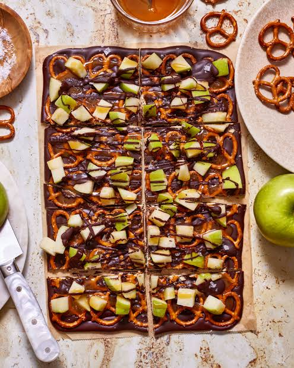

CRISP & SWEET
Caramel Apple Pretzel Bark
A quick no-bake treat sheet made from melted milk chocolate loaded with broken pretzels, diced fresh apples, and caramel drizzle.
⏱ 20 minutes prep + chilling
View Recipe
Ingredients
Ingredients:
- 12 ounces milk chocolate chips
- 1 tablespoon cooking oil
- 1 1/4 cups crushed mini pretzels
- 1 large Granny Smith apple, diced
- 1 teaspoon lemon juice
- 2/3 cup thick caramel sauce
- Sea salt flakes
Instructions
- Line a tray with parchment paper. Toss the diced apples in lemon juice and pat them totally dry with paper towels.
- Melt the chocolate chips and oil together in short microwave increments until completely smooth.
- Spread the liquid chocolate onto the parchment paper sheet. Scatter the crushed pretzels and dry apple bits across the top, pressing gently.
- Drizzle the caramel sauce across the surface and add a light sprinkle of sea salt.
- Refrigerate for 2 to 3 hours until firm, then break into shards to serve.